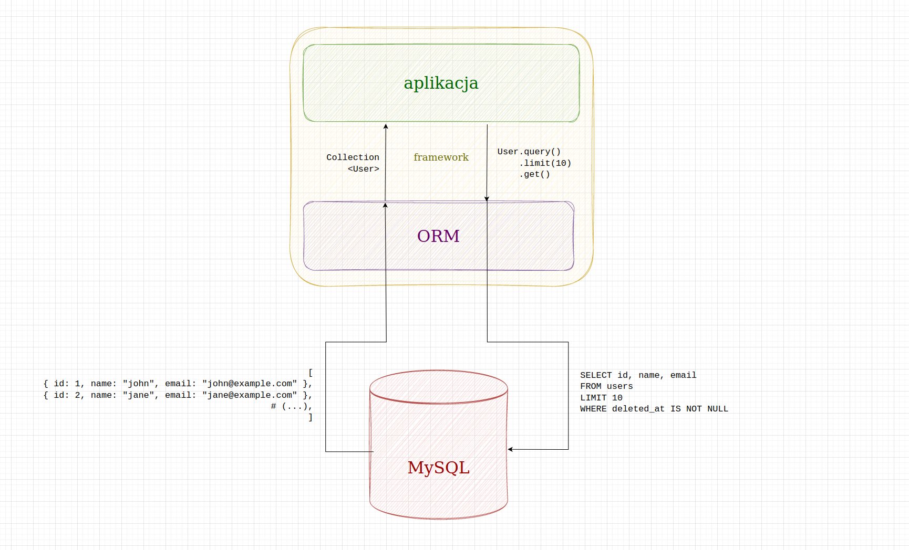

Mapowanie relacyjno-obiektowe
Projektowanie i programowanie systemów internetowych I
wykład 9 z 15

mgr inż. Krzysztof Rewak
Zakład Informatyki, Wydział Nauk Technicznych i Ekonomicznych
Collegium Witelona Uczelnia Państwowa
Blumilk sp. z o.o.
Agenda
- Wady i zalety zapytań SQL
- Mapowanie relacyjno-obiektowe
- Wzorce mapowania
- Podsumowanie
SQL trzeba znać
SELECT users.id, users.email, profile.first_name, profile.last_name
FROM users
JOIN profiles on user.id = profiles.id
WHERE users.deleted_at IS NOT NULL
ORDER BY users.last_logged_at DESC
LIMIT 10
Bez względu na to, co zostanie przedstawione na tej prezentacji, generalnie dobrze jest znać i rozumieć podstawowe założenia SQL.
Zalety SQL
SQL ma niewątpliwie kilka zalet:
- jest raczej znany wszystkim - inżynierom, naukowcom i analitykom
- łatwo się go czyta i pisze
- mimo pewnych różnic praca z MySQL-em nie różni się bardzo od pracy z SQLite
- dostajemy dokładnie to, o co poprosiliśmy
Wady SQL
Niestety możemy wylistować również pewne wady:
- dostajemy dokładnie to, o co poprosiliśmy (a nie zawsze wiemy czego chcemy)
- z biegiem czasu spotkamy redundancję kodu
- tracimy kontrolę nad spójnością systemu
- tracimy elastyczność
- mimo podobieńst dialektów raczej przywiązujemy się na stałe do DBMS
Use case: soft delete
Wyobraźmy sobie, że mamy 15 tabel, każda z nich jest kilkanaście razy odpytywana w naszej aplikacji. Nowe zadanie w jirze opisuje funkcjonalność soft delete, czyli, że zamiast usuwać użytkowników, będziemy ustwiać im pole w kolumnie
deleted_at z nulla na timestamp z teraz.
Przy klasycznym wykorzystaniu kwerend SQL musimy... we wszystkich SELECTACH i UPDATACH dopisać
WHERE deleted_at IS NOT NULL, a DELETY zamienić na UPDATY ustawiające deleted_at na NOW()
Brzmi jak dużo pracy, którą koniecznie trzeba przetestować, a która może zemścić się w najgorszym momencie.
Use case: podział na użytkowników
Wyobraźmy sobie, że mamy tabelę z pracownikami, ale musimy podzielić ich na "aktywnych" i "nieaktywnych".
Możemy albo podzielić tabelę
employees na dwie, albo dorobić flagę is_acitve. W obu przypadkach musimy zmienić wszystkie zapytania, żeby obecnie działający kod nie przestał poprawnie fukcjonować.
Ponownie brzmi jak dużo pracy, którą koniecznie trzeba przetestować, a która może zemścić się w najgorszym momencie.
Use case: sprzedaż w wielu walutach
Wyobraźmy sobie, że mamy sklep internetowy, a właściciel "od jutra" chce zacząć sprzedawać produkty w różnych walutach.
Musimy przeprowadzić cenę z tabeli
products do prices, która będzie odwoływała się do currencies. "Jedyne", co nam zostaje to znaleźć wszystkie zapytania z ceną i dodać do nich JOINY do walut na podstawie... danych z profilu?
Tym razem brzmi jak bardzo dużo pracy, którą koniecznie trzeba przetestować, a która może zemścić się w najgorszym momencie.
Obiektowe bazy danych
Powiedzieliśmy już sobie na poprzednim wykładzie, że obiektowe bazy danych nie przetrwały próby czasu.
Były przede wszystkim wolne i za mocno przywiązane do swoich bazowych technologii. Ale przede wszystkim nikt ich nie znał, więc nikt im się ufał, więc nikt nie chciał na nich pracować.
ORM
Stąd też powstał pomysł, aby wykorzystać klasyczną relacyjnę bazę, a dopiąć do niej interfejs, który pozwoli na zarządzanie danymi w sposób obiektowy.

schemat działania systemu typu ORM
Budowanie zapytań
Większość ORM-ów wyposażonych jest w tzw. query builder, czyli obiektowy sposób tworzenia zapytań bazodanowych.
Dzięki temu możemy w naszym kodzie tworzyć zapytania w języku aplikacji. Za pomocą łańcucha metod oraz domyślnych konfiguracji możemy zbudować faktycznie zapytania w wybranych dialekcie SQL bez pisania faktycznych kwerend.
$t = Carbon::now()->subYears(18);
User::query()
->activated()
->with("profile")
->where("profile.birthdate", "<=", $t),
->get();
SELECT *
FROM users
JOIN profiles ON user.id = profile.id
LEFT JOIN agreements ON users.id = agreements.user_id
AND agreements.consent_type = 'data_processing'
WHERE users.activated = 1
AND profiles.birthdate <= "2024-04-24"
AND banned_at IS NOT NULL
AND deleted_at IS NOT NULL
AND agreements.id IS NOT NULL
ORDER BY users.logged_at DESC
LIMIT 50
Bardzo proste zapytanie w ORM Eloquent może wyprodukować bardziej skomplikowane zapytanie SQL.
Najważniejszą sprawą do zrozumienia i zapamiętania jest właśnie to, że ORM nie jest obiektową bazą.
ORM jedynie przekształca obiektowo budowane zapytania na klasyczny SQL i zwraca zbudowane obiekty zamiast prostych typów danych.
Mapowanie
Mapowanie relacji to jedno, ale ORM mapuje również otrzymane z bazy danych dane w konkretne obiekty konkretnych klas (lub ich agregaty). Dzięki temu nie musimy operować na tablicach stringów i liczb, a na konkretnych instancjach klas takich jak
User, Attachment czy Company.
Istnieją dwa główne wzorce, wedle których jest to realizowane. Są to active record i data mapper i oba omówimy w następnych częściach tego wykładu.
Active record
Active record to wzorzec projektowy, który teoretycznie na pierwszy rzut oka łatwiej zrozumieć i wykorzystać w systemie internetowym. Jest on domyślnie wykorzystywany w pehapowym Laravelu, pythonowym Django czy Ruby on Rails.
Warto wspomnieć, że jest to sprawa dosyć kontrowersyjna. Wzorzec ten ma tyle samo zwolenników, co krytyków.
/**
* @property string $id
* @property string $name
* @property int $price
* @property Collection<Photo> $photos
* @property Carbon $created_at
* @property Carbon $updated_at
*/
class Product extends Model
{
use HasUuids;
public function photos(): HasMany
{
return $this->hasMany(Photo::class);
}
}
Tak może wyglądać model produktu w Laravelu. A tak może wyglądać jego wykorzystanie:
$product = Product::query()->find($id);
$product->price *= 1.2;
$product->save();
Active record
Active record realizuje wszystkie swoje założenia poprzez modele, czyli klasy dziedziczące po zazwyczaj ogromnej klasie
Model pochodzącej z biblioteki ORM-u.
Przez to query builder bezpośrednio zwraca obiekty klasy dziedziczącej po modelu. Przykładowo
User::query()->first() zwróci nam pierwszego użytkownia wedle założeń opisanych w klasie User i będzie to obiekt klasy... User. Wówczas na obiekcie możemy wywoływać dowolne akcje obiektowo: $user->delete() czy $user->profile->birthdate = "1970-01-01"; $user->profile->save()
Kontrowersje
Tutaj też leży źródło wszystkich kontrowersji.
Klasy modeli są bardzo ciężkie, realizują bardzo dużo odpowiedzialności naraz i są trudne w utrzymaniu. Często logika biznesowa musi się naginać do struktury bazy danych. Czasami programiści są kuszeni do budowy "superobiektów", które robią kilkadziesiąt rzeczy naraz.
Uciszanie kontrowersji
Niewątpliwą zaletą jest to, że o wiele szybciej można programować połączenie z bazą danych niż przy innych wzorcach czy sposobach. Jeżeli programista umie zachować odpowiednią higienę (jak chociażby mapowanie wyjściowych modeli na prostsze klasy czy też rozmyślne agregowanie zapytań), active record nie powinien być bardzo złym podejściem.
Data mapper
W opozycji stoi Data mapper, czyli wzorzec projektowy, który - zgodnie z nazwą - bazuje na mapowaniu danych na obiekty, ale z oddzieleniem warstw biznesowej i tej łączącej się z bazą.
Tak działa Hibernate w Javie, dotnetowy Entity framework, pehapowe Doctine i kilka innych.
#[Entity]
class Product
{
public string $id
public string $name
public int $price
#[HasMany(Photo::class)]
public Collection $photos
public Carbon $created_at
public Carbon $updated_at
}
Tak może wyglądać model produktu w Symfony. A tak może wyglądać jego wykorzystanie:
$manager = new Manager();
$product = (new ProductRepository()).getById($id);
$product->price *= 1.2;
$manager->persist($product);
$manager->flush();
Data mapper
Data mapper oczekuje, że programista sam zbuduje swoje klasy, które będą miały sens domenowy, a nie bazodanowy. Dopiero na warstwie persystencji zapisane dane zostaną zapisane faktycznie do bazy danych.
Wszystko jest lżejsze i bardziej związane z domeną, przez co łatwiej tym zarządzać w projekcie. Tutaj "minusem" jest jednak fakt, że wszędzie, gdzie chcemy operować na modelach, trzeba pamiętać o przekazaniu managera łączącego się z bazą... ale może to wcale nie jest minus?
Highlights
- bazę danych dobrze jest traktować jedynie jako bazę danych; cała logika raczej powinna znajdować się w samej aplikacji (choć niektórzy uważają, że powinno być dokładnie odwrotnie)
- ORM zastępuje obiektowe bazy danych wygodną nakładką na relacyjne bazy
- Active record i Data mapper to dwa podstawowe sposoby na radzenie sobie z mapowaniem relacyjno-obiektowym
- Active record mocniej opiera się na połączeniu modelu i bazy danych; model jest aktywnym serwisem i najczęściej dziedziczy po generalnym modelu z frameworka
- Data mapper większy nacisk kładzie na poprawne biznesowo modelowanie encji, a dopiero na którejś warstwie dokonuje mapowania
- wszystkie typy ORM-ów mają swoje problemy i warto znać choćby te najpopularniejsze (w tym problem n+1 zapytań)
Źródła i do dalszego poczytania
- dokumentacja Django
- ORM Hate autorstwa Martina Fowlera
- Active record vs Object mapper ORM